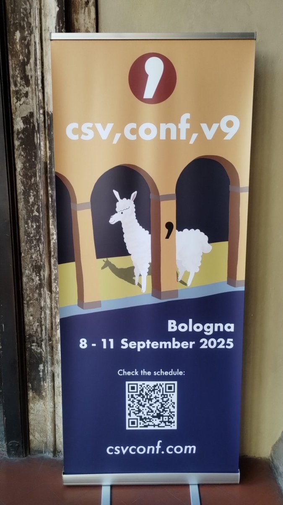
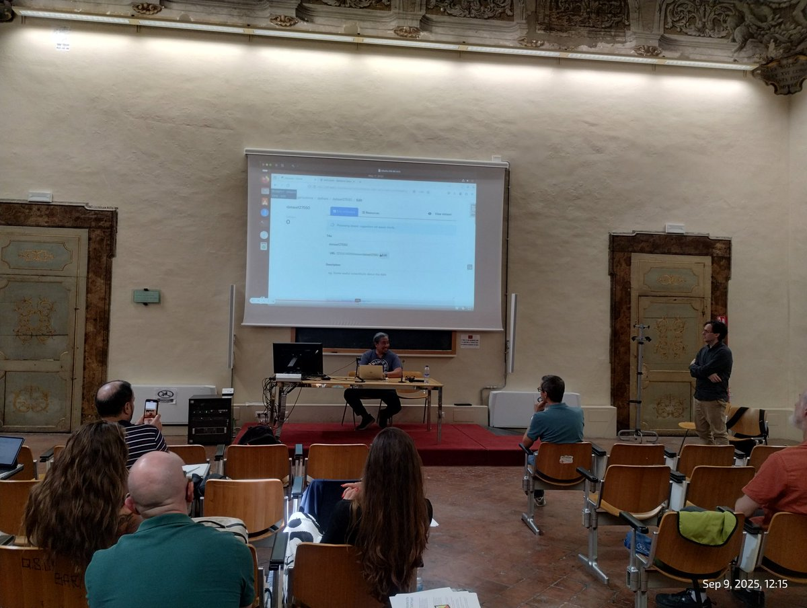
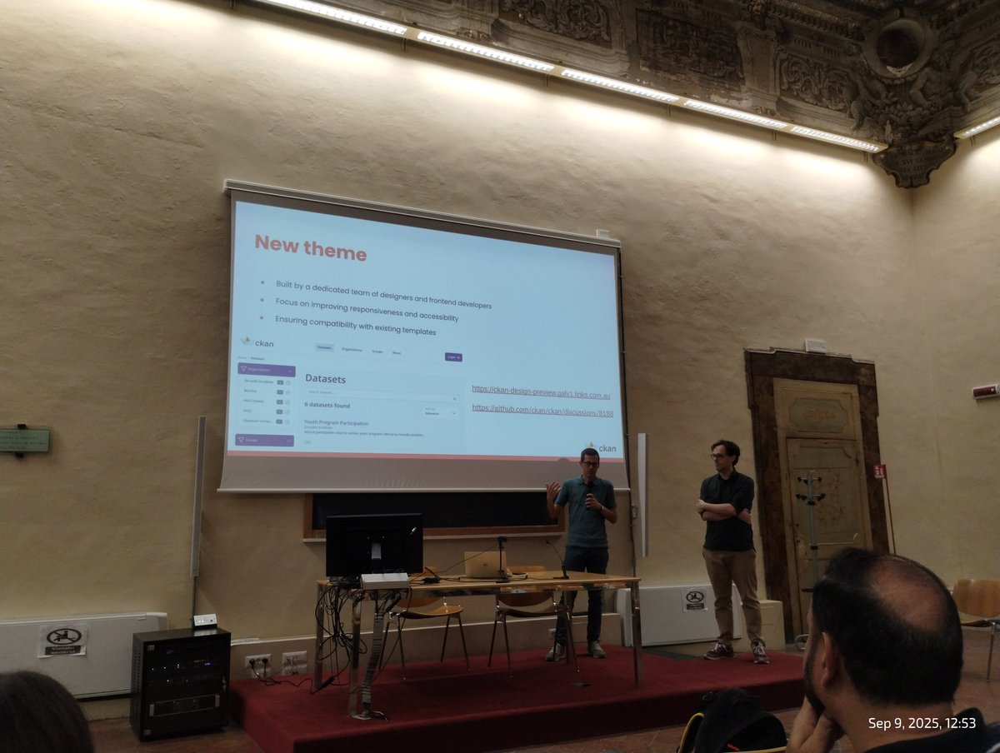
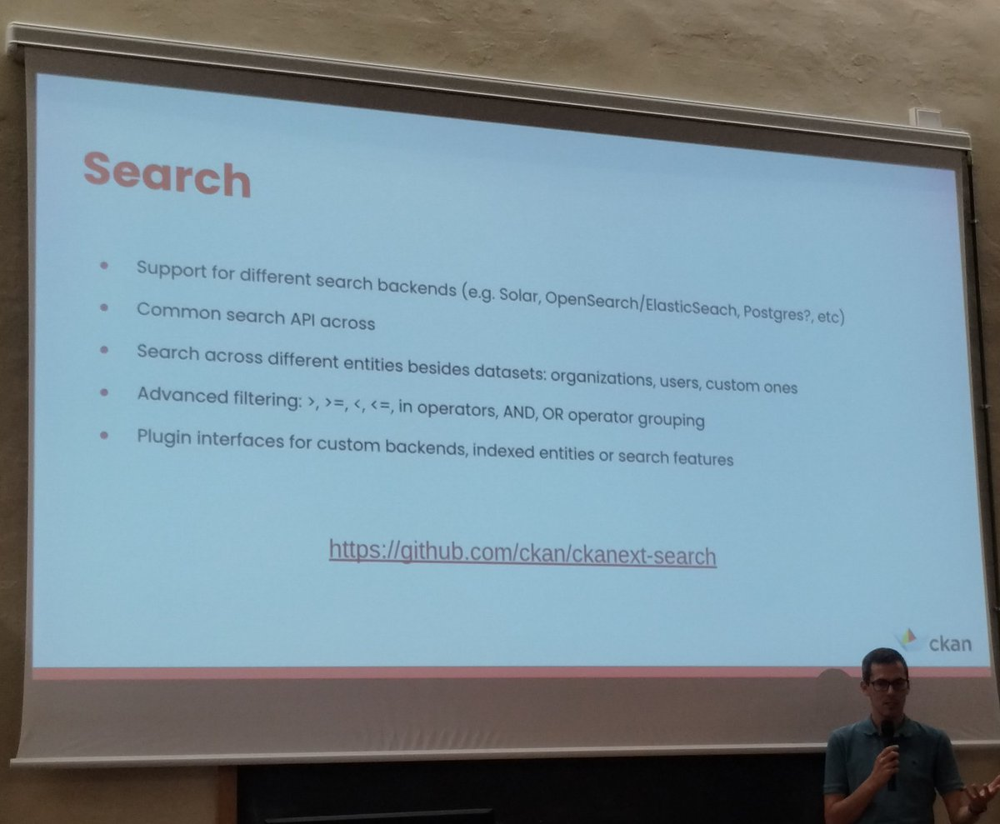
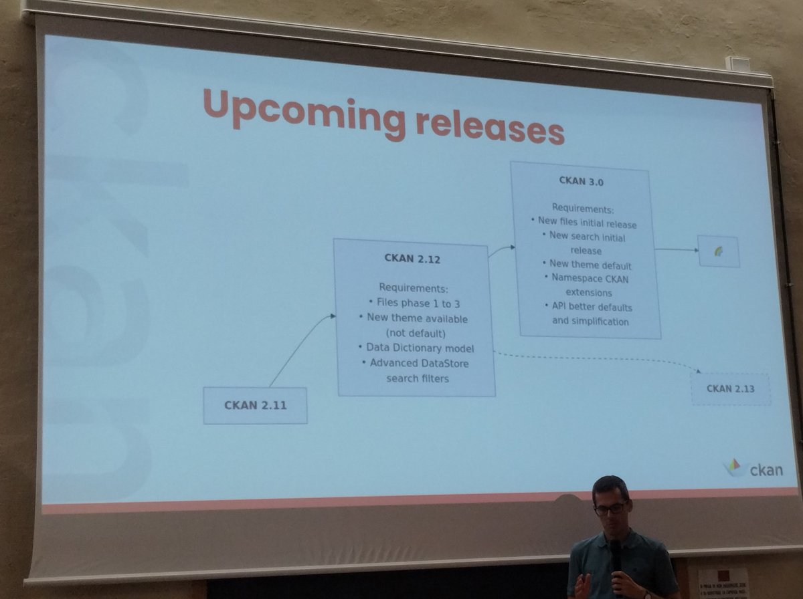
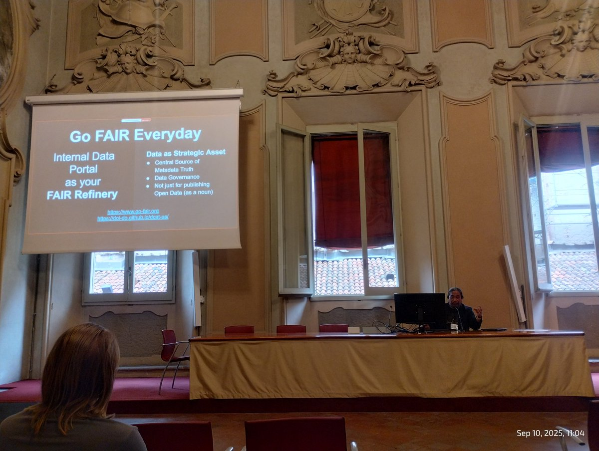
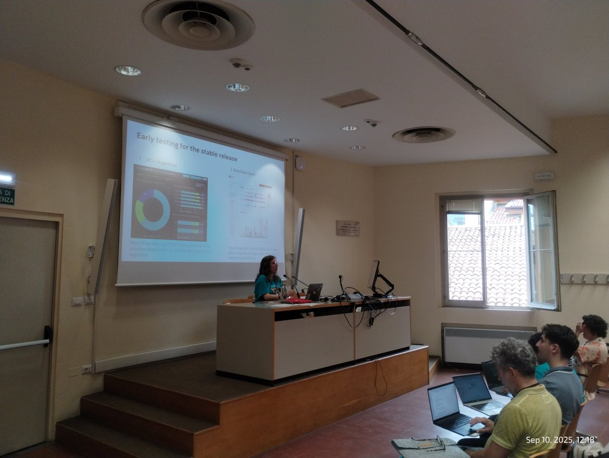
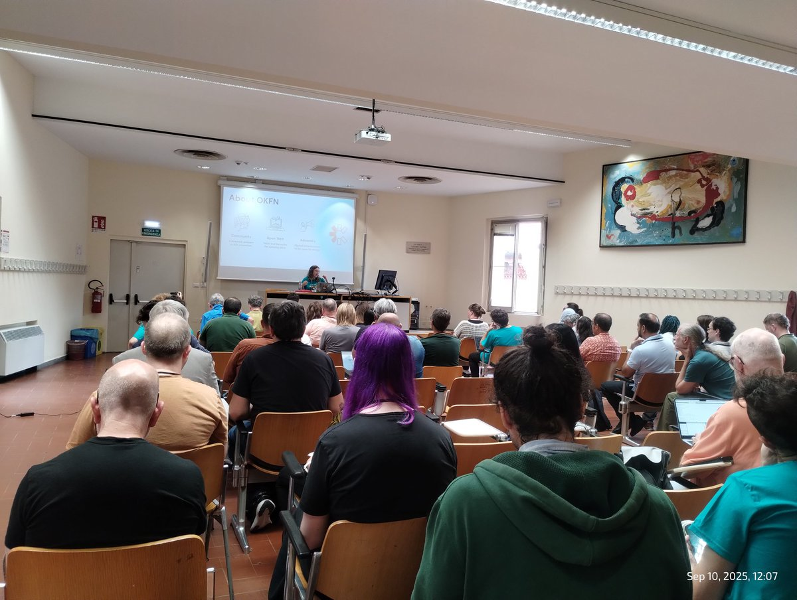
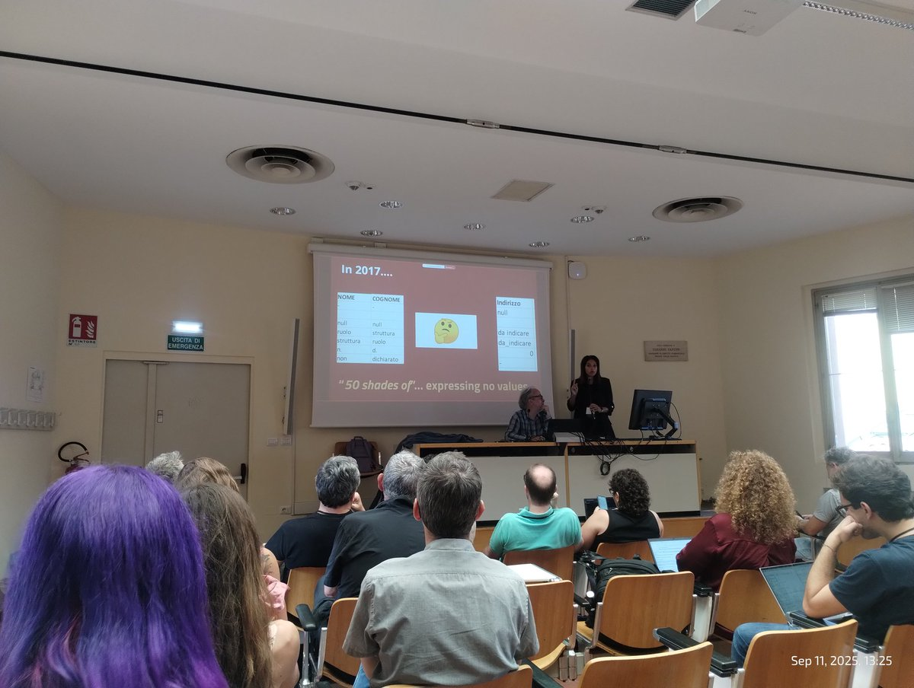

CSVConf 2025 en Bologna — notas desde el evento
Originalmente publicado como hilo en Twitter.
Estuve en Bologna, Italia, para CSVConf 2025. Estas son las notas que me llevé del evento.
This year we'll use 🤌separated values. We'll call it ISV (Italian emoji separated values). Excel won't get it anyway. #CSVConf

@jqnatividad proposes to upload data first allowing the CKAN Datapusher to infer the metadata and apply suggestions. It looks promising.

Someone says "Frontend developers" in a CKAN conference. That's new!

Can we remove Solr from CKAN? Cross your fingers.

CKAN 3.0.

Gestión de datos internos para que a la gente del gobierno/organización los datos le sean útiles en su trabajo diario. Eso va antes que los portales de datos abiertos. Coincido 100%.

Desde la @OKFN, @Sape_BY nos cuenta sobre el camino del "Open Data Editor", incluyendo los últimos grandes aportes de @colmanromi.


¡Hay gente criticando al hermoso formato CSV!

Comentarios
Comments powered by Disqus